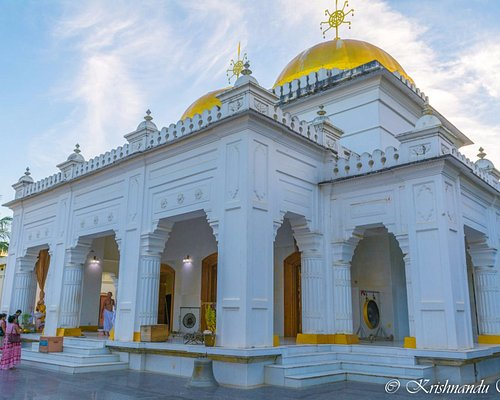

GOVINDJEE TEMPLE
Shree Govindajee Temple is the largest Vaishnava temple in Imphal district of Manipur, India. The temple is located next to the palace of the former rulers of the Manipur Kingdom. The temple is simple in design with two gold plated domes, a paved court and a large, raised mantapa, or congregation hall.
IMPHAL VALLEY

Imphal Valley is a marvellous oval shaped canyon formed as a result of drainage of many small rivers that origin from neighbouring hills. The water in the valley is fetched from several rivers, such as River Imphal, Iril, Thoubal, Khuga and Sekmai.
ISKHAN TEMPLE(IMPHAL)
The ISKCON Imphal Sri Sri Radha Krishna Chandra Temple, situated close to the banks of the Imphal River, is dedicated to the Hindu Lord Krishna.
LOKTAK LAKE
Loktak Lake is the largest freshwater lake in India. It is a pulsating lake, with surface area varying from 250 sq km to 500 sq km during rainy season with a typical area of 287 sq km. The lake is located at Moirang in Manipur state, India.
RKCS MUSEUM

RKCS Art Museum and Gallery is a prestigious art institution in the Indian Northeastern state of Manipur, Exhibiting historical, art and culture of Manipur in paintings. These paintings are original paintings of Manipur's legendary Artist Rajkumar Chandrajit Sana (RKCS).
SHIRUI KASHUNG

The Shiri-Kashong range in Manipur is home to the majestic Shirui Hills, known for the rare Shirui lily, the state flower of Manipur.